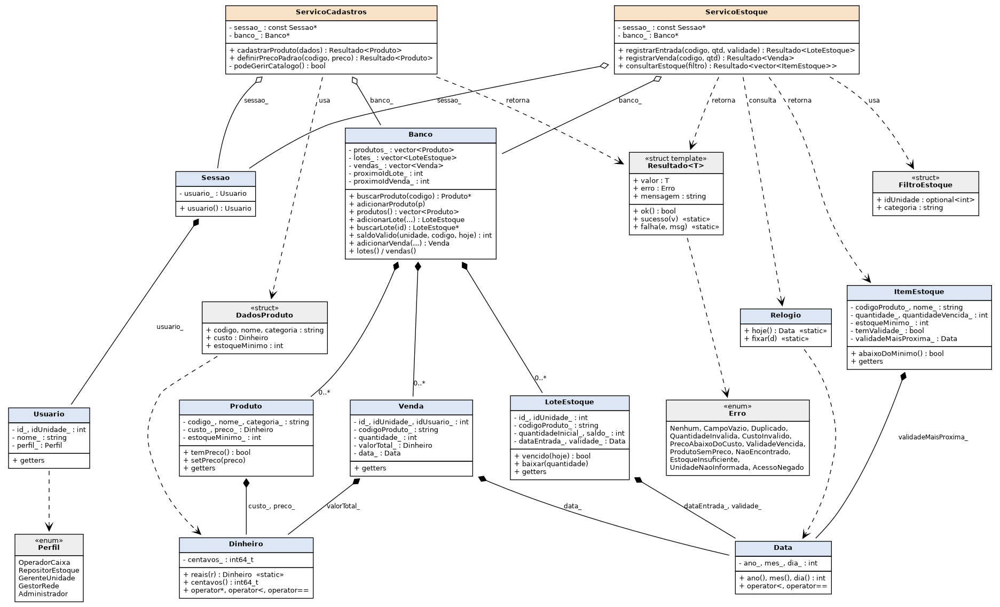

|
Bom-Preco
Controle de estoque e vendas por lote
|
Sistema de controle de estoque e vendas por lote da rede Bom-Preco.
Visao geral de todas as classes do sistema e de como elas se relacionam:
Todas as classes concretas seguem a forma canonica (construtor padrao, construtor de copia, operador de atribuicao e destrutor); esses membros foram omitidos do diagrama para facilitar a leitura.

O grafo de inclusoes completo do sistema aparece na pagina do arquivo main.cpp (menu Arquivos). Cada arquivo .h tambem mostra quem ele inclui e quem o inclui.